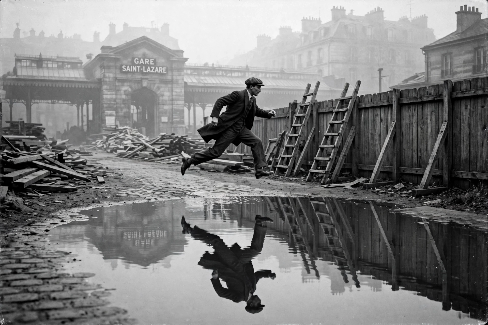

Henri Cartier-Bresson

Behind the Gare Saint-Lazare (1932): a man leaping over a puddle, his reflection below, an instant before his heel touches the waterHenri Cartier-Bresson (22 August 1908 – 3 August 2004) was a French artist and humanist photographer, a pioneer of street photography and the master of the 'decisive moment' — the instant when form and meaning align. In 1947 he co-founded the Magnum Photos agency with Robert Capa and others, and travelled the world for four decades with a Leica rangefinder and a 50mm lens.
His 1952 book Images à la sauvette (The Decisive Moment) is one of the most influential photography books ever published. Famous images include Behind the Gare Saint-Lazare (1932), Hyères (1932), the coronation crowds of London, the fall of the Kuomintang in China (1948–49) and Gandhi's funeral (1948).
Formation and Magnum
Cartier-Bresson studied painting with the Cubist André Lhote, absorbed Surrealism, and in 1931 bought a Leica after a formative year photographing in Africa. Wounded and captured in 1940, he escaped on his third attempt from a German prisoner-of-war camp and worked for the French Resistance, filming the liberation. Magnum gave him the independence to accept only assignments that interested him; he was the first Western photographer admitted to the USSR after Stalin's death (1954).
Style and later life
His method — no cropping, no staging, geometry seized on the move, respectful anonymity — defined photojournalism's conscience. In the 1970s he largely gave up photography to return to drawing and painting, guarding his privacy so fiercely that he often covered his face when photographed himself.